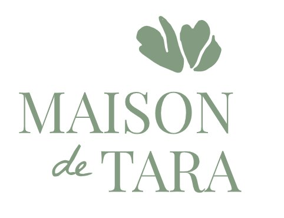
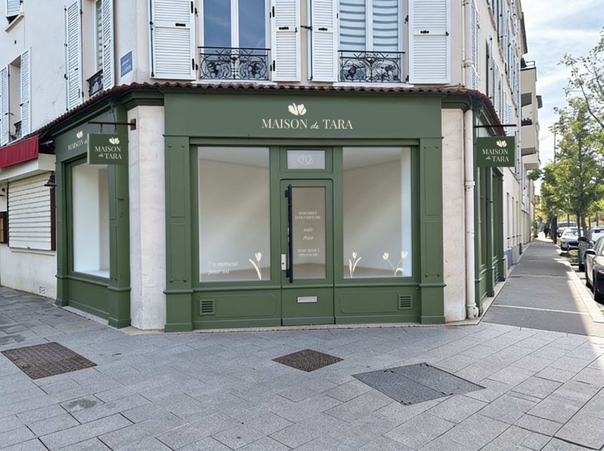

Atelier
Peindre une piece que l'on garde.
Une tasse, une assiette, un petit objet pour soi ou pour offrir.

Maison de Tara ReserverArt de vivre - Inde x France
Cette version place la boutique et les matieres au premier plan, tout en gardant l'atelier comme geste central. Elle parle aux clientes qui aiment recevoir, offrir et composer un interieur chaleureux.


Une boutique douce, sans logique d'e-commerce agressive.

Atelier
Une tasse, une assiette, un petit objet pour soi ou pour offrir.
Cafe
Le cafe rend l'experience plus fluide, moins transactionnelle.
Boutique
Le souvenir ne s'arrete pas a l'atelier.
Cadeaux & saisons
Bons cadeaux, ateliers duo, petits objets, textiles, selections de fin d'annee : cette direction prepare naturellement une future extension e-commerce sans l'imposer maintenant.

Venir a la Maison
La facade devient un signal fort : premium mais accueillant, local mais singulier, facile a reconnaitre dans la rue.
Preparer ma visite